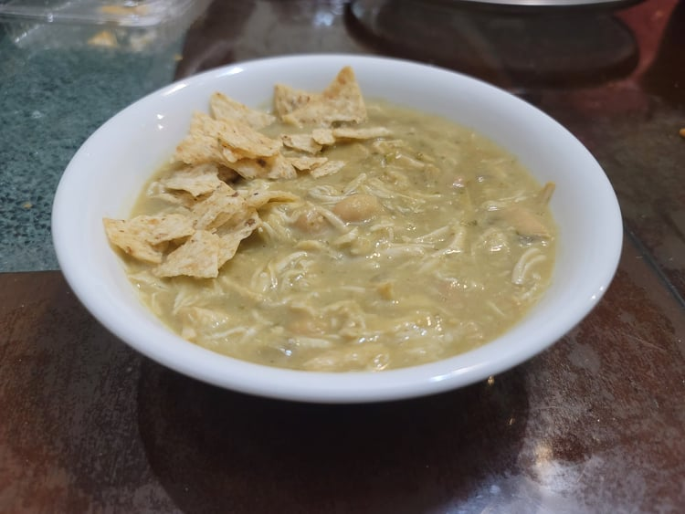

White Chicken Chili

Ingredients:
- 1 1/2 lb Chicken breast
- 1 Onion, diced
- 2 15 oz cans Great northern beans, drained and rinsed
- 1 5 oz can Mild green chilis
- 1 cup Salsa verde
- 1 cup Chicken stock
- 1 tsp Garlic powder
- 1 tsp Cumin
- 1/2 - 1 tsp Salt
- 4 tbsp Cream cheese
Instructions:
- Place all ingredients except for the cream cheese into a slow cooker. Let cook for 4-5 hours on high or 6-8 hours on low.
- Remove the chicken from the slow cooker and shred it with forks.
- Using and immersion blender, blend the chili for 5-10 seconds to blend only some of the beans.
- Place the cream cheese into a separate bowl with a few spoons of the chili and stir until well incorporated. Then stir it back into the chili along with the shredded chicken.
- Serve hot with crumbled tortilla chips.